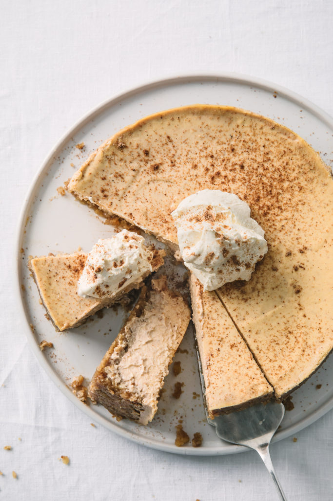

Keto Pumpkin Cheesecake (for 16 Servings)

Description
This recipe is a yummy and rich-tasting cross between my decades-old cheesecake recipe and pumpkin pie, converted to be low-carb. I also use low-fat cream cheese to reduce the amount of fat. It's wonderful for Thanksgiving, or just for fun anytime. Unless you tell people it's low-carb, they'll never guess!
Ingredients
- 1 cups almonds
- 1 cups pecans
- 2 (1 gram) packets granular sucralose sweetener
- 3 tablespoons butter, melted
- 3 (8 ounce) packages low-fat cream cheese, at room temperature
- 1 (15 ounce) can pumpkin puree
- 1 teaspoons vanilla extract
- 1 teaspoons ground cinnamon
- 0.5 teaspoon ground ginger
- 0.25 teaspoon ground cloves
- 0.25 teaspoon salt
- 3 eggs
Steps
- Preheat the oven to 350 degrees F (175 degrees C).
- Pulse almonds and pecans together in a food processor until ground, but not paste-like. Add sweetener and butter; pulse to combine. Press mixture into the bottom of a 9-inch springform pan.
- Bake in the preheated oven until crust is golden brown, about 10 minutes. Let cool 10 minutes.
- Blend cream cheese and 2/3 cup sweetener in food processor or with an electric mixer until smooth, 2 to 3 minutes. Mix in pumpkin, vanilla extract, cinnamon, ginger, cloves, and salt until smooth, about 2 minutes more. Add in eggs one at a time, mixing thoroughly after each addition. Pour batter into the prepared crust.
- Bake in the preheated oven until just set in the center, or when the filling jiggles but does not run, 45 to 50 minutes. Let cool completely, about 30 minutes. Run a knife around the edge of the cheesecake, cover, and refrigerate at least 4 hours, until ready to serve.
Return to home